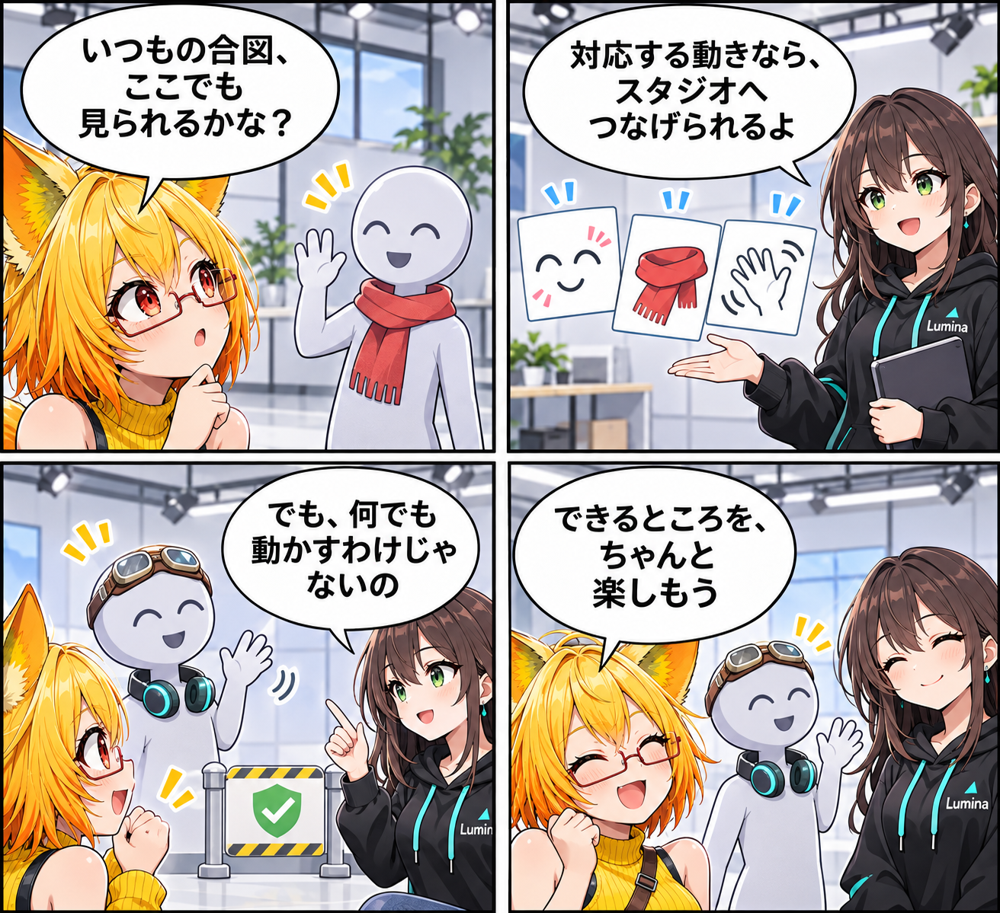

閑話休題：アバターの「いつもの動き」を、スタジオへ
新規実装の報告ではなく、VRASにあるAV3互換の考え方を紹介する回です。外部Converterを通して取り込んだアバターの、対応範囲にある表情・衣装切替・GestureやActionを、ローカルのスタジオでも確かめられます。
main です。集計終了時点のHEADは c33733a41be121b814a1732df8c9eae089ace2ea、期間内コミットは0件でした。Assets/Scenes/MainScene.unity の未コミット差分は、期間内に実装された事実を確定できないため実績には含めていません。
アバターの「いつもの合図」を見たいとき
VRChat Avatar 3.0（AV3）のアバターでは、表情や衣装、ジェスチャーなどがAnimatorの状態とパラメータの組み合わせで動きます。VRASでは、外部Converterが必要な情報を読み取り、安全な中間表現へ変換して、VRAS内で扱える表情・モーション・表示切替へつなげます。
持ち込める動きと、持ち込まない仕組み
対応範囲には、表情、衣装・アクセサリーの切替、Gesture、Action、互換対象のアニメーション動作があります。一方で、任意のスクリプトやDLLを実行したり、ネットワーク同期やWorld Scriptを再現したりはしません。許可した範囲のRuntime Graphを使うことで、ローカルのスタジオで安全に扱う方針です。
アバターごとの違いを確かめながら
VRASが目指すのはVRChat Clientそのものの完全再現ではありません。アバター側の構成によって利用できる表現や再現度は異なるため、取り込んだあとに「どこまで使えるか」を確かめながら、撮影や調整へつなげます。
今回の紹介範囲
これは現行実装の紹介です。当日に新しく実装・検証完了したことや、全アバターでの動作を示すものではありません。
4コマの話
ろひは、アバターのいつもの挨拶をスタジオでも見られるか気にします。ルミナは、対応する動きをつなげられる一方で、何でも実行する仕組みではないことを伝えます。最後は、できる範囲を見ながら楽しむことにしました。
まとめ
VRASは、外部Converterで取り込んだAV3アバターについて、対応範囲の表情、衣装切替、Gesture、Actionなどを安全な形でスタジオへつなげます。VRChat Clientの完全互換ではないことを前提に、アバターごとの違いを見ながら使う既存機能です。